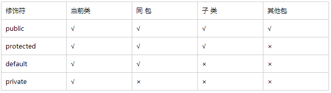

Java 关键字
Java 有一类被称为访问修饰符（access modifier）的关键字（keywords），如 public、private、protected；以及一类非访问修饰符 static、final 等。它们可以用于classes、methods 以及 variables上，因而它们的使用极易造成混淆，我将在该文章中将对之进行总结。
1. 访问修饰符和包作用域（Package Scope）
通常来说，被 public 标记的特征（features）可以被任何类使用，而 private features 只能被定义它们的类使用。如果你既没有指定 public 也没有指定 private，这个特征 (that is, the class, method, or variable) 可以被同一个包下的所有方法访问到。然而，有时候我们希望一个 method 仅对子类可见，或者是允许子类的 methods 访问超类的域。在这样的情况下，就可以使用 protected 访问限制符。
下面对Java的四种访问修饰符进行总结：
外部类的修饰符只能是 public 或默认，类的成员（包括内部类）的修饰符可以是以上四种。
2. 静态变量和静态方法（Static Methods）
静态方法不能对实例进行操作，没有 this 参数，不能访问实例域，但可以访问类的静态域。静态方法可直接通过类调用。
static 方法不能被覆盖，因为方法覆盖是基于运行时动态绑定的，而 static 方法是编译时静态绑定的。
main 方法【public static void main(String[] args)】是个静态方法。事实上，当一个程序运行初始，还没有任何对象存在，main 方法执行，开始构造程序所需的对象。因此 main 方法只能是静态方法。
3. Final Classes and Methods
不能被继承的类被称为 final classes，使用 final 修饰符定义一个 final class。final class 中的所有方法都是 final method，你也可以在非 final class 中定义 final method，这样子类就不能重写该方法。
4. 常量（Constants）
我们使用关键字 final 去指定一个常量，例如：final double CM_PER_INCH = 2.54; 表示只能一次赋值以后值不能被修改。
我们通常希望一个常量可以被一个类中的多个方法访问，将之定义在类中，它们通常被称为类常量（class constants），设置类常量使用关键字 static final.。
static 的其余功能：导入静态方法/静态域
从 Java SE 5.0 开始，import 语句不仅仅可以导入类，而可以导入静态方法和静态域。例如：
import static java.lang.System.*;
然后你便可以直接使用 System 类的静态方法和域而不需要类名前缀：
out.println("Goodbye, World!"); // i.e., System.out
exit(0); // i.e., System.exit
还有两个更为适合使用静态导入的场合：
- Mathematical functions:静态导入 Math 类，你能以更自然的方式使用这些数学公式，例如：sqrt(pow(x, 2) + pow(y, 2)) 看起来比 Math.sqrt(Math.pow(x, 2) + Math.pow(y, 2)) 更清晰。
- Cumbersome constants:你可能会需要使用大量名字繁琐的常量，例如： (d.get(DAY_OF_WEEK) == MONDAY) 比 (d.get(Calendar.DAY_OF_WEEK) == Calendar.MONDAY) 看起来更轻松。
5. Java 中的保留字
现有Java版本尚未使用但以后版本可能会作为关键字使用，如：goto、const
6. assert
assertion （断言）在软件开发中是一种常用的调试方式，断言机制可以使你在测试阶段进行测试，在生成产品代码时自动去除。断言可以有两种形式：
assert condition;
assert condition : expression;
如果 condition 为 false，将抛出 AssertionError；在第二种表达式中，expression 还将传递给 AssertionError 对象的构造方法并转变成一条 message 字符串，例如：
assert x >= 0 : x;
最新评论.
该文章目前没有任何评论！